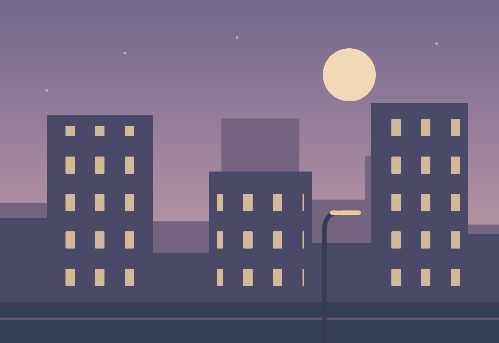

לגלות את המקור הטוב יותר
כשהאתר חושף גרסה באיכות גבוהה, HoverView מנסה להציג אותה. אם המקור אינו זמין, הוא חוזר לתמונה הזמינה.
עוברים עם העכבר. התמונה גדלה.
כל הפרטים שרציתם לראות, בלי לאבד את המקום בעמוד.
חינם · קוד פתוח · התקנה מקומית במצב מפתח



התמונות נשארות באתר.
הפרטים מגיעים אליכם.
עברו על אחת התמונות. בטלפון? הקישו עליה.
זו הדגמה באתר — אין צורך להתקין כדי לנסות.
כל מה שצריך למבט קרוב יותר.
ואפשר לכוון הכול בדיוק להרגלים שלכם.
כשהאתר חושף גרסה באיכות גבוהה, HoverView מנסה להציג אותה. אם המקור אינו זמין, הוא חוזר לתמונה הזמינה.
רווח מצמיד את התמונה. גלגלת מקרבת. אפשר לגרור אחרי זום, לסובב ולפתוח את המקור בלשונית חדשה.
ליד הסמן או במרכז, כהה או בהיר, מיד או אחרי השהיה. אפשר להפעיל רק עם Alt ולכבות בנפרד בכל אתר.
בלי הרשמה ובלי אנליטיקה. ההגדרות נשמרות במחשב. התמונות נטענות משרתי המקור, לפי כללי האתר והדפדפן.
הגרסה הראשונה זמינה כקובץ ZIP להתקנה מקומית.
התוסף עדיין אינו מופיע בחנות Chrome.
הורידו את ה־ZIP וחלצו אותו לתיקייה קבועה במחשב. שמרו את התיקייה גם אחרי ההתקנה.
הורדת HoverViewהדביקו את הכתובת הבאה בשורת הכתובת של Chrome והפעילו מצב מפתח.
לחצו Load unpacked, בחרו בתיקיית hoverview המכילה את manifest.json, ורעננו את לשוניות האתרים הפתוחות.
התוסף מזהה תמונות רגילות, מקורות srcset, קישורים לקובצי תמונה וחלק מתמונות הרקע. גלריות ייחודיות, Canvas ואתרים שמגבילים טעינת תמונות עשויים שלא לעבוד. Chrome חוסם תוספים בדפים פנימיים ובחנות התוספים.
כשהאתר חושף תמונה גדולה יותר, התוסף מנסה לבחור בה. אם יש רק קובץ קטן, הוא מגדיל את התצוגה. אין שיפור תמונה באמצעות AI או יצירת פרטים חדשים.
כדי לזהות את התמונה שמתחת לעכבר ולהוסיף חלונית הגדלה בתוך העמוד. ההרשאות הנוספות הן storage לשמירת הגדרות ו־activeTab לזיהוי האתר בעת פתיחת חלון התוסף. הקוד פתוח לעיון.
רק העדפות התצוגה והאתרים שהפעלתם או כיביתם נשמרים במחשב. אין שרת של התוסף או אנליטיקה. טעינת התמונה פונה לשרת התמונה המקורי ועשויה לכלול את פרטי בקשת הדפדפן הרגילים. למדיניות הפרטיות המלאה.
פתחו את סמל התוסף וכבו "הפעלה באתר הזה". לעדכון, הורידו גרסה חדשה, החליפו את הקבצים בתיקייה הקבועה, לחצו על רענון בכרטיס התוסף ב־chrome://extensions ורעננו את לשוניות האתרים.
הקוד וההורדה מוצעים בחינם ברישיון MIT. אין חשבון או מנוי בתוך התוסף.